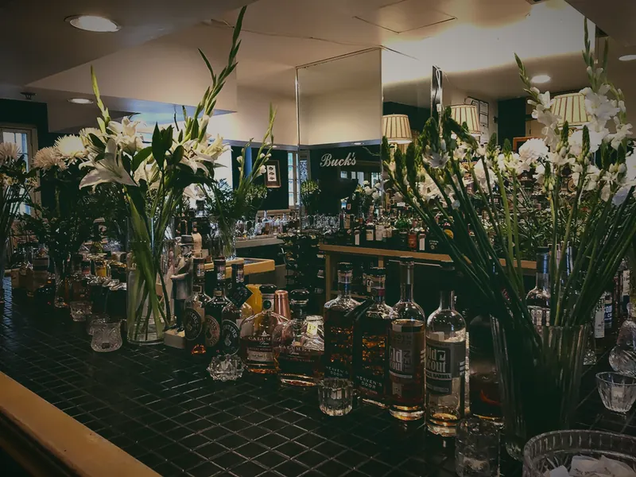

I.The Atmosphere
Dressed for the evening.
White flowers against dark green walls. Twinkling candles. Artfully mismatched antique china. Set in the historic Mayflower building in the heart of Old Louisville, Buck’s is the place to impress — for birthdays, anniversaries and every occasion that deserves a little ceremony.